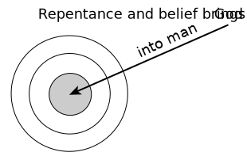

> And God said, Let us make man in Our image, according to Our likeness
Have you ever wondered why you are living in this world and what the purpose of your life is? There are six keys that unlock this mystery.
## 1. God's Plan
<p>God desires to express Himself through man (<a id="rom8-29ref">Rom. 8:29</a>).
<span class="verse" id="rom8-29v">
Because those whom He foreknew, He also predestinated to be conformed to the image of His Son, that He might be the Firstborn among many brothers;
</span>
For this purpose, He created man in His own image (<a id="gen1-26ref">Gen. 1:26</a>).
<span class="verse" id="gen1-26v">
And God said, Let Us make man in Our image, according to Our likeness; and let them have dominion over the fish of the sea and over the birds of heaven and over the cattle and over all the earth and over every creeping thing that creeps upon the earth.
</span>
Just as a glove is made in the image of a hand to contain a hand, so also man is made in the image of God to contain God. By receiving God as his content, man can express God (<a id="2cor4-7ref">2 Cor. 4:7</a>).
<span class="verse" id="2cor4-7v">
But we have this treasure in earthen vessels that the excellency of the power may be of God and not out of us.
</span>
</p>
## 2. Man
<img src="../../img/mohl/fig1.svg" />
<p>To fulfill His plan, God made man as a Body vessel (<a id="rom9-21-24ref">Rom. 9:21-24</a>).
<span class="verse" id="rom9-21-24v">
Or does not the potter have authority over the clay to make out of the same lump one vessel unto honor and another unto dishonor? And what if God, wishing to demonstrate His wrath and make His power known, endured with much long-suffering vessels of wrath fitted for destruction, In order that He might make known the riches of His glory upon vessels of mercy, which He had before prepared unto glory, Even us, whom He has also called, not only from among the Jews but also from among the Gentiles?
</span>
This vessel has three parts: body, soul, and spirit (<a id="1thes5-23ref">1 Thes. 5:23</a>).
<span class="verse" id="1thes5-23v">
And the God of peace Himself sanctify you wholly, and may your spirit and soul and body be preserved complete, without blame, at the coming of our Lord Jesus Christ.
</span>
The body contacts and receives the things of the physical realm. The soul, the mental faculty, contacts and receives the things of the psychological realm. And the human spirit, the innermost part of man, was made to contact and receive God Himself (<a id="john4-24ref">John 4:24</a>).
<span class="verse" id="john4-24v">
God is Spirit, and those who worship Him must worship in spirit and truthfulness.
</span>
Man was created not merely to contain food in his stomach, or to contain knowledge in his mind, but to contain God in his spirit (<a id="eph5-18ref">Eph. 5:18</a>).
<span class="verse" id="eph5-18v">
And do not be drunk with wine, in which is dissoluteness, but be filled in spirit,
</span>
</p>
## 3. Man's Fall
<p>But before man could receive God as life into his spirit, sin entered into him (<a id="rom5-12ref">Rom. 5:12</a>).
<span class="verse" id="rom5-12v">
Therefore just as through one man sin entered into the world, and through sin, death; and thus death passed on to all men because all have sinned
</span>
Sin deadened his spirit (<a id="eph2-1ref">Eph. 2:1</a>),
<span class="verse" id="eph2-1v">
And you, though dead in your offenses and sins,
</span>
made him an enemy of God in his mind (<a id="col1-21ref">Col. 1:21</a>),
<span class="verse" id="col1-21v">
And you, though once alienated and enemies in your mind because of your evil works,
</span>
and transmuted his body into sinful flesh (<a id="gen6-3ref">Gen. 6:3</a>; <a id="rom6-12ref">Rom. 6:12</a>).
<span class="verse" id="gen6-3v">
And Jehovah said, My Spirit will not strive with man forever, for he indeed is flesh; so his days will be one hundred twenty years.
</span>
<span class="verse" id="rom6-12v">
Do not let sin therefore reign in your mortal body so that you obey the body's lusts;
</span>
Thus, sin damaged all three parts of man, alienating him from God. In this condition, man could not receive God.</p>
## 4. Christ's Redemption for God's Dispensing
<img src="../../img/mohl/fig2.svg" />
<p>Nevertheless, man's fall did not deter God from fulfilling His original plan. In order to accomplish His plan, God first became a man called Jesus Christ (<a id="john1-1ref">John 1:1</a>, <a id="john1-14ref">14</a>).
<span class="verse" id="john1-1v">
In the beginning was the Word, and the Word was with God, and the Word was God.
</span>
<span class="verse" id="john1-14v">
And the Word became flesh and tabernacled among us (and we beheld His glory, glory as of the only Begotten from the Father), full of grace and reality.
</span>
Then Christ died on the cross to redeem man (<a id="eph1-7ref">Eph. 1:7</a>),
<span class="verse" id="eph1-7v">
In whom we have redemption through His blood, the forgiveness of offenses, according to the riches of His grace,
</span>
thus taking away his sin and bringing him back to God (<a id="john1-29ref">John 1:29</a>; <a id="eph2-13ref">Eph. 2:13</a>).
<span class="verse" id="john1-29v">
The next day he saw Jesus coming to him and said, Behold, the Lamb of God, who takes away the sin of the world!
</span>
<span class="verse" id="eph2-13v">
But now in Christ Jesus you who were once far off have become near in the blood of Christ.
</span>
Finally, in resurrection, He became the life-giving Spirit so that He could dispense His unsearchably rich life into man's spirit (<a id="1cor15-45ref">1 Cor. 15:45b</a>; <a id="john20-22ref">John 20:22</a>; <a id="john3-6ref">3:6</a>).
<span class="verse" id="1cor15-45v">
So also it is written, "The first man, Adam, became a living soul"; the last Adam became a life-giving Spirit.
</span>
<span class="verse" id="john20-22v">
And when He had said this, He breathed into them and said to them, Receive the Holy Spirit.
</span>
<span class="verse" id="john3-6v">
That which is born of the flesh is flesh, and that which is born of the Spirit is spirit.
</span>
</p>
## 5. Man's Regeneration

<p>Since Christ has become the life-giving Spirit, man can now receive God's life into his spirit. The Bible calls this regeneration (<a id="1pet1-3ref">1 Pet. 1:3</a>; <a id="john3-3ref">John 3:3</a>).
<span class="verse" id="1pet1-3v">
Blessed be the God and Father of our Lord Jesus Christ, who according to His great mercy has regenerated us unto a living hope through the resurrection of Jesus Christ from the dead,
</span>
<span class="verse" id="john3-3v">
Jesus answered and said to him, Truly, truly, I say to you, Unless one is born anew, he cannot see the kingdom of God.
</span>
To receive this life, man needs to repent to God and believe in the Lord Jesus Christ (<a id="acts20-21ref">Acts 20:21</a>; <a id="acts16-31ref">16:31</a>).
<span class="verse" id="acts20-21v">
Solemnly testifying both to Jews and to Greeks repentance unto God and faith in our Lord Jesus.
</span>
<span class="verse" id="acts16-31v">
And they said, Believe on the Lord Jesus, and you shall be saved, you and your household.
</span>
To be regenerated, simply come to the Lord with an open and honest heart and say to Him:
</p>
> _Lord Jesus, I am a sinner._ <br>
> _I need You._ <br>
> _Thank You for dying for me._ <br>
> _Lord Jesus, forgive me._ <br>
> _Cleanse me from all my sins._ <br>
> _I believe You rose from the dead._ <br>
> _I receive You right now as my Savior and life._ <br>
> _Come into me! Fill me with Your life!_ <br>
> _Lord Jesus, I give myself to You for Your purpose._ <br>
## 6. God's Full Salvation
<img src="../../img/mohl/fig4.svg" />
<p>After regeneration, a believer needs to be baptized (<a id="mark16-16ref">Mark 16:16</a>).
<span class="verse" id="mark16-16v">
He who believes and is baptized shall be saved, but he who does not believe shall be condemned.
</span>
Then God begins the lifelong process of gradually spreading Himself as life from the believer's spirit into his soul (<a id="eph3-17ref">Eph. 3:17</a>).
<span class="verse" id="eph3-17v">
That Christ may make His home in your hearts through faith, that you, being rooted and grounded in love,
</span>
This process, called transformation (<a id="rom12-2ref">Rom. 12:2</a>),
<span class="verse" id="rom12-2v">
And do not be fashioned according to this age, but be transformed by the renewing of the mind that you may prove what the will of God is, that which is good and well pleasing and perfect.
</span>
requires human cooperation (<a id="phil2-12ref">Phil. 2:12</a>).
<span class="verse" id="phil2-12v">
So then, my beloved, even as you have always obeyed, not as in my presence only but now much rather in my absence, work out your own salvation with fear and trembling;
</span>
The believer cooperates by allowing the Lord to spread into his soul until all his desires, thoughts, and decisions become one with those of Christ. Finally, at Christ's return, God will fully saturate the believer's body with His life. This is called glorification (<a id="phil3-21ref">Phil. 3:21</a>).
<span class="verse" id="phil3-21v">
Who will transfigure the body of our humiliation to be conformed to the body of His glory, according to His operation by which He is able even to subject all things to Himself.
</span>
Thus, instead of being empty and damaged in each part, this man is filled and saturated with the life of God. This is God's full salvation! Such a man expresses God and fulfills God's plan!</p>
© Living Stream Ministry (lsm.org)